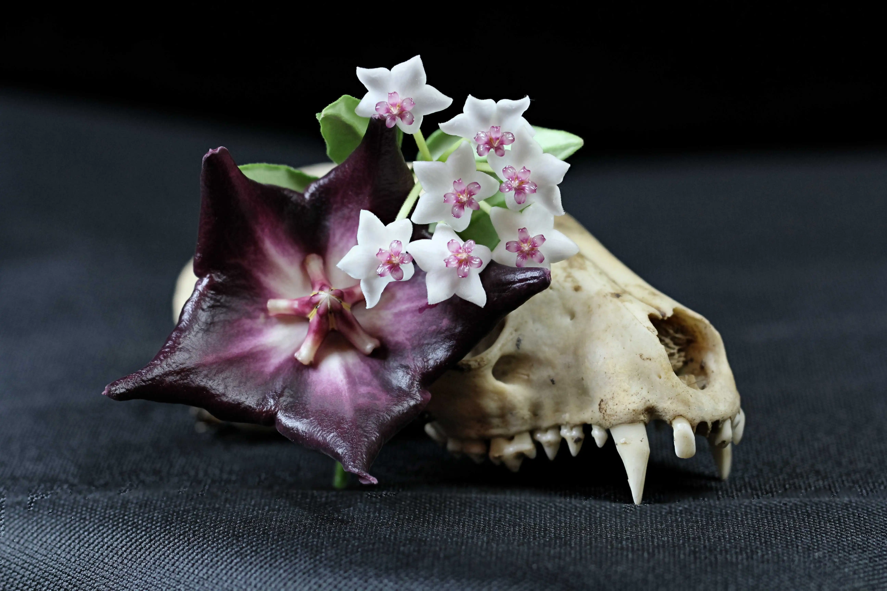

General Care and Hoya Vocabulary
| Plant Characteristic | Description |
|---|---|
| Family | Apocynaceae |
| Genus | Hoya |
| Common Name | Wax Plant or Porcelain Flower Plant |
Genus Background and Distribution
The first Hoya was described to the genus in 1810. Botanist R. Brown named it in honor of his colleague T. Hoy. The genus comprises about 600 to 700 evergreen perennial plant species, with over 500 scientific names published. New species are being discovered regularly, primarily due to hybridization. This leads to much discrepancy within the group and with many being still undescribed or unnamed.
While Hoyas can be found growing terrestrially, they are commonly found growing epiphytically, in the treetops, in the continents Asia and parts of Australia. The most diverse groups of Hoyas come from the subtropical and tropical areas of Asia and through the western Pacific, such as: Philippines, Indonesia, Malaysia, and Papua New Guinea. Most Hoya grow under an elevation of 1000 meters, though some grow closer to sea level. Elevation can be important to some species such as Hoya linearis, which requires cooler temperatures at night and misted constantly as their leaves don't retain much moisture.
Hoyas have a couple different growth structures. The epiphytic types of Hoya's tend to be more vining and climbing. Another type of Hoya which is more pendant shaped can be styled best as hanging plants. Some Hoyas are more erect, bushy and shrub like, which is one of the more uncommon growth structure.
Leaf and Stem Morphology
Hoya leaves come in many thickness varieties, from very thin to very succulent like. Hoyas produces two opposing leaves per node, with the exception of Hoya imbricata, which leave growth pattern resembles shingles (only one leaf per node.) Generally you can deduce the habitat of your Hoya by looking at the leave structure. Large, thin, dark leaves generally mean that the plant is more accustomed to shadier, wet environments. Hoyas with a semi-succulent leaves will often require a short drought period in order to flower. Drying for 4-5weeks in the spring, paired with good window light will likely encourage more flowering.
Stems of the Hoya are often wiry and produce a sticky substance. A Hoya is lactiferous, meaning it produces a sticky substance that can be white, clear, or yellow.
Flower Morphology
There are three main parts to a hoya flower are the calyx, the corona, and corolla. The stalks of the Hoya flowers cluster together in a common center and extend out to form a flat or curved surface called an umbel. The corolla, or the petals of the Hoya flower, can come six different types, including: spreading, revolute, reflexed, campanulate (bell-shaped), incurved (claw-shaped), or urceolate (urn-shaped). The flower color varies from species to species, with flowers of the same species even sporting different colors.
Root System / When to repot
Hoyas will commonly put out adventitious roots, or aerial roots, along the exposed stem. This makes Hoyas extremely easy to propagate, especially if some of these aerial roots are already established. If you give Hoyas higher humidity, the adventitious roots will often grow outward and cling to surfaces around them. Hoyas roots should be able to dry out a little before being watered again as their roots are susceptible to root rot.
Hoyas can stay in the same pot for a long time and prefer that their root system be a little bit root-bound. A root-bound Hoya can also encourage blooming. How do you know when your Hoya needs a bigger pot? If you notice one or more of the following signs, it might be time to upgrade your Hoya's Home.
Soil Type
Due to their nature, Hoyas do not need to be repotted often, instead refresh their soil every 2-3 years. In Asia it is customary to plant Hoyas in just Coconut chips. The soil mixes should include lots of aeration, with at least a third of the substrate consisting of perlite. Personally I use a mix of 1/3 perlite, 1/3 orchid bark, 1/3 peat, with a handful of sphagnum moss. It is advantageous to plant Hoyas in terracotta pots, since they are porous and help remove the access water from the soil substrate or potting medium. Hoyas that grow close to sea level may also require additional calcareous substrate or other amendments to their potting medium such as eggshells or oyster shells on top or within the soil mixture. It should be noted that if these additional substrates are added, the soil will slowly become more alkaline as you water the plant.
Fertilizing Schedule
Hoyas don't require much micronutrients and macronutrients. If you are going to give our Hoyas some fertilizer, be sure to use a gentle liquid fertilizer that is a bit more dilute than what you would give to traditional plants. Generally you should stick to fertilizing your Hoyas during their growing period; bimonthly or monthly Spring through beginning of Fall will help their growth. If you are wanting to help promote blooms, you can add some fertilizer that is higher in phosphorous to boost the blooms.
Watering Schedule
A good rule to follow is to listen to your Hoyas! Take your finger and feel the dirt about 2in down. If it feels dry to the touch, then it's time to give your Hoya a good soak. If it is damp even slightly, then check back in with the soil in a couple days. Hoyas need watered less in the winter time, as they are not growing as rapidly. It is important to note, and may sound counterintuitive, during the winter the air can become very dry, which will dry out your Hoyas more rapidly. During the Summer months you'll find you need to water you Hoyas more frequently. The closer a Hoya is to light source, the more rapidly it will dry out as well. Hoyas with smaller substrate, i.e. a mounted Hoya, will need to be watered more often then those in a ceramic pot. Hoyas require intermittent drying out, without which they are super susceptible to root rot.
Light
Most Hoyas cannot withstand direct, intense light. Because they are used to competing in forest for light, they are more accustomed to getting dappled or diffuse light. Hoyas with thick, succulent, lighter-colored leaves generally mean that the Hoya will require fuller sun and withstand some level of drought. For those that grow closer to sea level, Hoya leaves will often exhibit more succulent like leaves and often require (or can withstand) more intense light conditions. Hoya generally grow best in the 50-80% shade range, to avoid intense direct light whose ultraviolet rays could break down the chlorophyll in the leaves. Some species leaves will become reddened when sun stressed, which can be beautiful but should be done with care as to not kill the plant.
Toxicity to Animals
While many of the plants in the dogbane Family (Apocynaceae) are poisonous, those of the Hoya Genus are non-toxic to humans and pets. The Univeristy of Connecticut lists Hoyas as non-toxic houseplant, however they advise that even non-toxic plants can cause a reaction in certain individuals.
Common Pests
There are not many pests that plague Hoyas. Ones to look out for are mealybugs on the leaves. They can be especially difficult in the tightly packed tendrils of the "Hindi Rope" Hoya Compacta. Aphids are also attracted to the flowers of the Hoya. Both pests can be tended to by spraying your plants down with water and wiping each area with a clean cloth. A neem oil mixture is also safe to use to help keep the pests at bay. Remember to quarantine any affected plants until you can ensure the pest are gone.